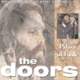

PALACE OF EXILE (CD)
Colosseum 97-C-013, USA 1997 |
| 1.Back Door Man/ 2.Break On Through/
3.When The Music's Over/ 4.Ship Of Fools/
5.Roadhouse Blues/ 6.Light My Fire/ 7.The
End-Across The Sea-Away In India-Crossroads-Wake
Up-The End |
| Sources: Isle Of Wight Festival, Isle
Of Wight, England, August 29th, 1970 (despite a
nasty cut during The End it is the complete
concert). Most probably copied from a complete
soundboard recording, done by the film company. |
| Soundquality: |
 |
|
|
|
|
 |
| Rarity Of Material: |
to |
|
|
|
|
| Visual Attractiveness: |
|
|
|
|
|
If there wasn't a nasty cut during The End at 7
minutes 25 seconds (about 5 minutes of instrumental solos
got cut out for no obvious reasons), this US bootleg CD
would be absolutely perfect. The whole thing looks
marvellous: a perfect fold-out cover plus a nicely
designed inlay featuring photos from the official Isle
Of Wight video. The disc is in hifi stereo and
features the entire concert including the complete
announcement and the song Roadhouse Blues, which
many people attending that festival remembered but stayed
unpublished on all previous bootleg releases of that
concert. It is - as usual for this song - a powerful,
driving version featuring Robby's great guitar solo,
which I like better than on the studio version. Jim does
his "cha-cha-luga-rap" in the middle
break, like on the version published on In Concert.
Unfortunately Palace Of Exile is a very rare disc,
just available in the States, and it is very expensive.
Despite that, it is a very recommended new release
(compare it to the Tangie Town release called First
Flash Of Eden TTR 9002, as reviewed in DQ 33, pages
15 and 16).
PERCEPTION (1CD)
A Priori CD 791321, Czech Republic 1995 (?) |
| 1.Hello I Love You/ 2.People Are Strange/
3.The Unknown Soldier/ 4.My Wild Love/ 5.Summer's
Almost Gone/ 6.Five To One/ 7.Strange Days/
8.Horse Latitudes/ 9.Love Me Two Times/
10.Moonlight Drive/ 11.My Eyes Have Seen You/
12.Wintertime Love/ 13.Spanish Caravan/ 14.You're
Lost Little Girl/ 15.Not To Touch The Earth/
16.We Could Be So Good Together |
| Sources: All songs copied from
official Doors albums. |
| Soundquality: |
|
| Rarity Of Material: |
|
| Visual Attractiveness: |
|
Sometimes I think it's a crime throwing all those
great songs together, putting them out of their original
context of their original releases. The same goes for
Greatest Hits - compilations. But anyway, another A
Priori release with a nice cover, containing songs
everybody already has. This is a low price CD, widely
distributed in Germany.
POEMS, LYRICS AND STORIES
BY JAMES DOUGLAS MORRISON (CD)
Men At Work 5511.2, Italy 1990 |
| 1. Back Door Man/ 2.My Eyes Have Seen You/
3.Soul Kitchen/ 4.Get Off My Life/ 5.Crawling
King Snakes/ 6.People Are Strange/ 7.Alabama
Song/ 8.The Crystal Ship/ 9.Unhappy Girl/
10.Moonlight Drive/ 11.Summer's Almost Gone
(tracklist on the cover is not in the correct
order) |
| Sources: Matrix Club, San Francisco,
March 7th, 1967 |
| Soundquality: |
|
| Rarity Of Material: |
|
| Visual Attractiveness: |
|
Forget this one. Same quality and same cover as the
original vinyl version. Not worth a penny although it is
pretty rare by now. The songorder is absolutely incorrect
and the cover photos were taken from postcards showing
Jim Morrison.
POEMS, LYRICS AND STORIES
BY JAMES DOUGLAS MORRISON (CD)
On Stage Records CD/ON 2328, Italy 1994 |
| 1. Back Door Man/ 2.My Eyes Have Seen You/
3.Soul Kitchen/ 4.Get Off My Life/ 5.Crawling
King Snakes/ 6.People Are Strange/ 7.Alabama
Song/ 8.The Crystal Ship/ 9.Unhappy Girl/
10.Moonlight Drive/ 11.Summer's Almost Gone
(tracklist on the cover is not in the correct
order) |
| Sources: Matrix Club, San Francisco,
March 7th, 1967 |
| Soundquality: |
|
| Rarity Of Material: |
|
| Visual Attractiveness: |
|
Forget this one, too. Same quality and same cover as
the Men At Work CD, which was copied from the original
vinyl version. Not worth a penny. The songorder is still
absolutely incorrect and the cover photos were still
taken from postcards showing Jim Morrison. One notable
difference is the addition of Super Value on the
cover of the reprint.
PURE EXPRESSION OF JOY (CD)
Cool Daddy Productions 00626-A, USA 1997 |
| 1.Pure Expression Of Joy/ 2.Wishful
Sinful/ 3.Wild Child/ 4.Gloria/ 5.Frederick/
6.Build Me A Woman/ 7.The Soft Parade/ 8.Spanish
Caravan/ 9.Back Door Man/ 10.Wake Up-Light My
Fire/ 11.The Unknown Soldier/ 12.People Are
Strange #1/ 13.People Are Strange #2/ 14.People
Are Strange #3/ 15.People Are Strange #4/
16.People Are Strange #5/ 17."Directing The
Doors"/ 18.Hello I Love You |
| Sources: 1= Jim Morrison-Interview
from official video The Doors Are Open; 2, 6+7=
Critique, PBS TV, WNET, New York, May 13th, 1969,
as remixed for the official video The Soft
Parade; 3= Recording Session of the song Wild
Child from official video The Soft Parade; 4=
from official CD In Concert (mixed down to mono);
5= from bootleg video version of Feast Of
Friends; 8,9,10+11= Roundhouse, London, England,
September 7th, 1968, second show, from official
video The Doors Are Open; 12-17= Murray The K.
T.V.Show Outtakes, Battery Park, New York,
September 22nd, 1967, taken from a bootleg video;
18= from The Doors' Demo Acetate, World Pacific
Studios, Los Angeles, September 2nd, 1965, most
probably taken from a good tape copy. |
| Soundquality: |
to |
| Rarity Of Material: |
to |
| Visual Attractiveness: |
|
Although the cover of this CD looks very unusual (a
"flying" Jim Morrison above a desert; the
designer took a Günter Zint photo to create it), it
contains material that many fans will already know. About
half of the tracks are available officially on video or
record, the other half is already widely spread among
fans. Besides that, this original US disc is pretty
expensive in Europe; therefore you might not really need
it.
|